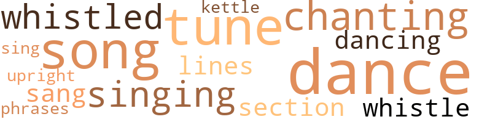
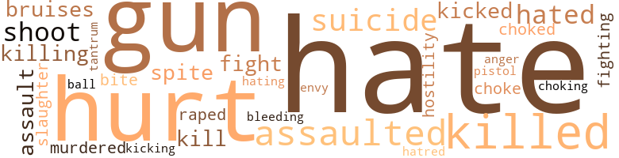

White Bastards, by Cain, Johnnie Mae (1973)
22 music-related terms matched in this text.
Most frequent terms in this topic: dance (2); chanting (2); tune (2); whistled (2); song (2)
dance.n.01
Definition: an artistic form of nonverbal communication
| word | sentence |
|---|---|
| dance | The nurse stood there courageously as he continued the dance and the song of yas . |
| dances | Manure continued his yells and dances . |
| dance | Anybody who 'd quit school and then live common law with a man still married , takes pills , smoke mara - whatever that dope is , dance half naked in some dingy smoky cafe in front of a bunch of no-good drunks , fight with her one and only mother , and does God knows what else is mentally unbalanced . |
dance.v.02
Definition: move in a pattern; usually to musical accompaniment; do or perform a dance
| word | sentence |
|---|---|
| dancing | Piano lessons , dancing lessons and everything else she could remember . |
kettle.n.04
Definition: a large hemispherical brass or copper percussion instrument with a drumhead that can be tuned by adjusting the tension on it
| word | sentence |
|---|---|
| kettle | Her voice got louder and louder , like a kettle drum reaching its loudest crescendo . |
phrase.n.02
Definition: a short musical passage
| word | sentence |
|---|---|
| phrases | Teddy ran to the door , putting her nose against the bars , yelling obscene phrases through the bars . |
section.n.01
Definition: a self-contained part of a larger composition (written or musical)
| word | sentence |
|---|---|
| section | The nurse noticed that the doctor had just turned to the section of the chart where Hoople 's report was . |
sing.v.02
Definition: produce tones with the voice
| word | sentence |
|---|---|
| sang | " Rock of ages , cleft for me , let me hide myself in thee , " Teddy sang loudly . |
| singing | They all began singing very loud . |
| sing | " You ought to sing that sad song to those bastards who raped me three years ago . |
singing.n.01
Definition: the act of singing vocal music
| word | sentence |
|---|---|
| singing | The nurse went back and stopped the singing . |
song.n.01
Definition: a short musical composition with words
| word | sentence |
|---|---|
| song | The nurse stood there courageously as he continued the dance and the song of yas . |
| song | " You ought to sing that sad song to those bastards who raped me three years ago . |
tone.v.01
Definition: utter monotonously and repetitively and rhythmically
| word | sentence |
|---|---|
| chanting | His arms were uplifted and he was chanting a prayer . |
| chanting | Mantire was chanting his morning prayers . |
tune.n.01
Definition: a succession of notes forming a distinctive sequence
| word | sentence |
|---|---|
| tune | The old woman continued rocking and humming a tune under her breath . |
| lines | Because we do n't get wrinkles and lines and look old as quickly as they do . |
| tune | The waitress cleared the table , humming some unknown tune to Teddy . |
upright.n.02
Definition: a piano with a vertical sounding board
| word | sentence |
|---|---|
| upright | Sally sat upright in bed holding her throat . |
whistle.v.01
Definition: make whistling sounds
| word | sentence |
|---|---|
| whistle | The nurse gently pushed Mrs. Pierce to one side , pulled a small red whistle and blew . |
| whistled | As he approached room eleven , he whistled . |
| whistled | Davey whistled , walked over to the swinging kitchen door and looked through a small square window in the door . |
103 violence-related terms matched in this text.
Most frequent terms in this topic: hate (23); hurt (10); gun (10); killed (7); assaulted (6)
anger.n.01
Definition: a strong emotion; a feeling that is oriented toward some real or supposed grievance
| word | sentence |
|---|---|
| anger | With anger , with sickness , or with hunger , my Lord : not with love . |
assail.v.01
Definition: attack someone physically or emotionally
| word | sentence |
|---|---|
| assaulted | My daughter just assaulted me . |
| assaulted | She said I assaulted her and I 'm - oh hell , forget it . |
| assaulted | You assaulted her and tried to commit suicide . " |
| assaulted | I never assaulted her , either ! |
| assaulted | Now , I assaulted her ! |
| assaulted | Considering I 'm white , I 'd hate to get assaulted today . |
bleeding.n.01
Definition: the flow of blood from a ruptured blood vessel
| word | sentence |
|---|---|
| bleeding | She continued to laugh wildly , pointing at Mantire 's bleeding body . |
bruise.n.01
Definition: an injury that doesn't break the skin but results in some discoloration
| word | sentence |
|---|---|
| bruises | Look at these bruises and marks on me . |
| bruises | She showed me her arms and I saw several red bruises where patient had been tied and restrained . |
envy.n.01
Definition: a feeling of grudging admiration and desire to have something that is possessed by another
| word | sentence |
|---|---|
| envy | I am not poor , but I am proud , Of one inalienable right , Above the envy of the crowd , - THOUGHT 'S HOLY LIGHT . |
fight.n.05
Definition: a boxing or wrestling match
| word | sentence |
|---|---|
| fight | Anybody who 'd quit school and then live common law with a man still married , takes pills , smoke mara - whatever that dope is , dance half naked in some dingy smoky cafe in front of a bunch of no-good drunks , fight with her one and only mother , and does God knows what else is mentally unbalanced . |
| fight | I had a fight with my mother . |
fight.v.02
Definition: fight against or resist strongly
| word | sentence |
|---|---|
| fighting | He told them that they were all fighting integration and calking about how much better they were than the colored folks when everyone of them was screwing or had screwed a colored woman . |
fit.n.01
Definition: a display of bad temper
| word | sentence |
|---|---|
| tantrum | Teddy sat down on the floor kicking and screaming like a child having a tantrum . |
gag.v.06
Definition: cause to retch or choke
| word | sentence |
|---|---|
| choked | Sometimes in the middle of the night , Sally thought she was being choked . |
| choke | Teddy continued to choke her . |
| choking | Two of the men held Teddy and one guy forced her mouth open by applying pressure to her throat , as if he were choking her . |
gun.n.01
Definition: a weapon that discharges a missile at high velocity (especially from a metal tube or barrel)
| word | sentence |
|---|---|
| gun | Teddy quickly pulled the gun from Sim 's holster and pushed him back against the wall . |
| gun | She pointed the gun at him and leaned against the window . |
| gun | She lifted the gun and pointed it at the nervous man 's head . |
| gun | Who would ever believe in a million years that a crazy broad held a gun on me and forced me to fuck her roommate . |
| gun | " Listen Teddy , you may as well give me that gun , " Sims was saying . |
| Gun | Gun ? |
| gun | What gun ? |
| gun | Teddy was still holding the gun . |
| gun | The gun was now aimed at Darren . |
| gun | " Teddy , " Darren began , " what are you doing with that gun ? " |
| gun | Slowly , he removed the gun from her trembling right hand . |
hate.n.01
Definition: the emotion of intense dislike; a feeling of dislike so strong that it demands action
| word | sentence |
|---|---|
| hatred | Thinking of all the obscene things she had said , and this obsessive hatred of ail whites , when she was white herself . |
| hate | If so , the hate would pass . |
hate.v.01
Definition: dislike intensely; feel antipathy or aversion towards
| word | sentence |
|---|---|
| hate | I hate the others , though . |
| hate | That 's why I hate white people . |
| hate | I hate him . |
| hate | " Now , Teddy , tell me , why you seem to hate all white people . " |
| Hate | " Hate all white people ? " |
| hate | Why should I hate all white people ? |
| hate | I surely do n't hate myself . |
| hate | Do I act like I hate you ? " |
| hate | " Cause I hate white folks and you 're white . " |
| hate | " I hate Arizona , " Teddy hissed . |
| hate | Considering I 'm white , I 'd hate to get assaulted today . |
| hate | I hate whites and I hate you damn hypocrites that laugh and grin and pretend . |
| hate | I hate whites and I hate you damn hypocrites that laugh and grin and pretend . |
| hated | He always hated to go into eleven and twelve . |
| hate | I hate all you motherfuckers . |
| hate | She seems to hate white people and she - well , she just acts strange to me . " |
| hates | " Not because she hates white people , I hope . |
| hate | I 'd hate to think what the mental institutions would look like if we had to put away all the folks who hated black people at one time . " |
| hated | I 'd hate to think what the mental institutions would look like if we had to put away all the folks who hated black people at one time . " |
| hate | I hate you white bastards ! |
| hate | That 's why I hate you bastards . |
| hate | I hate you ! |
| Hate | Hate you ! |
| Hate | Hate you ! " |
| hated | Teddy hated him . |
| hate | You know how she seems to hate white people . |
| hate | I hate these other creeps . |
| hate | I hate those white bastards . " |
| hate | " Ca n't she hate whites and still be normal ? " |
| hating | But her problem is more complex than just hating whites . |
hostility.n.01
Definition: a hostile (very unfriendly) disposition
| word | sentence |
|---|---|
| hostility | Patient does not exhibit any known hostility against whites or any other race . |
injury.n.01
Definition: any physical damage to the body caused by violence or accident or fracture etc.
| word | sentence |
|---|---|
| hurt | Mr. Mayes had no objection to her leaving , but Sally saw the hurt in his large brown eyes . |
| hurt | The woman looked hurt . |
| hurt | He use to tell his mother when he was small how his back hurt . |
kick_back.v.02
Definition: spring back, as from a forceful thrust
| word | sentence |
|---|---|
| kicking | Teddy sat down on the floor kicking and screaming like a child having a tantrum . |
| kicked | She kicked and pulled , but Joe held his tight grip . |
| kicked | I kicked that louse out on his heels . " |
kill.v.10
Definition: cause the death of, without intention
| word | sentence |
|---|---|
| killed | I could have killed you both , you know . " |
| killing | She 's killing herself , that 's what she 's doing . |
| Killing | Killing herself and us too . " |
| killed | Said his grandfather killed a white man about his colored lover . '' |
| killed | Almost killed her . |
| killed | She all but killed a little old laay , and something is the matter with her . |
| kill | " According to your mother , you took a handful of pills to try and kill yourself . " |
| killed | Darren decided that something had to be done quickly , before Teddy killed someone . |
| killed | I killed him . |
| killed | " I killed the dirty white bastard . |
| kill | If a stare could kill , Linda would have fallen dead . |
malice.n.01
Definition: feeling a need to see others suffer
| word | sentence |
|---|---|
| spite | I knew I could always come home , in spite of Mother . " |
| spite | They both laughed in spite of the emergency . |
murder.v.01
Definition: kill intentionally and with premeditation
| word | sentence |
|---|---|
| murdered | She was being murdered right here in her bed and no one knew except she . |
musket_ball.n.01
Definition: a solid projectile that is shot by a musket
| word | sentence |
|---|---|
| ball | Teddy threw her head back and her long straight hair fell down back to her waist like a new bowling ball heading for a strike . |
pain.v.02
Definition: cause emotional anguish or make miserable
| word | sentence |
|---|---|
| hurt | They tried to hurt me . |
| hurt | That pretty little thing could n't hurt a fly . " |
| hurt | You 'll hurt me , then I ca n't help you . " |
| hurt | He certainly did n't want anyone hurt by a report from him . |
| hurt | Gristles do n't hurt . |
| hurt | Do n't want to hurt you . |
| hurt | After all , she did n't hurt you , " the second officer had said . |
pistol.n.01
Definition: a firearm that is held and fired with one hand
| word | sentence |
|---|---|
| pistol | She pointed a finger at Joe as if aiming a pistol ready to lire . |
rape.n.03
Definition: the crime of forcing a woman to submit to sexual intercourse against her will
| word | sentence |
|---|---|
| assault | After failure to get her in , he 'd carried her and she had been booked for disturbing the peace and assault on an officer . |
| assault | " Do n't you think since she 's a woman you could drop the charge of assault ? |
rape.v.01
Definition: force (someone) to have sex against their will
| word | sentence |
|---|---|
| raped | " You ought to sing that sad song to those bastards who raped me three years ago . |
shoot.v.02
Definition: kill by firing a missile
| word | sentence |
|---|---|
| shoot | Just shoot it dead . " |
| shoot | Just shoot it ! |
| Shoot | " Shoot me will you , you bitch ? " |
slaughter.n.03
Definition: the savage and excessive killing of many people
| word | sentence |
|---|---|
| slaughter | Haul cattle to slaughter houses . " |
sting.n.03
Definition: a painful wound caused by the thrust of an insect's stinger into skin
| word | sentence |
|---|---|
| bite | She has a big bark , but a little bite . |
suicide.n.01
Definition: the act of killing yourself
| word | sentence |
|---|---|
| suicide | Says she was attacked after trying to stop Sally from committing suicide by taking a bottle of pills . |
| suicide | You assaulted her and tried to commit suicide . " |
| suicide | " When the hell did l ever try to commit suicide ? " |
| suicide | But it was to calm my nerves , not to commit suicide . |
35 religion-related terms matched in this text.
Most frequent terms in this topic: God (10); Christ (7); church (4); Jesus (3); prayer (2)
catholic.n.01
Definition: a member of a Catholic church
| word | sentence |
|---|---|
| Catholic | She was Catholic . |
church.n.02
Definition: a place for public (especially Christian) worship
| word | sentence |
|---|---|
| church | Mayes did n't like him much , but she worked diligently and planned the largest , most beautiful church wedding . |
| church | " You have n't paid your church dues ? |
| church | " They were having church back there . |
church.n.04
Definition: the body of people who attend or belong to a particular local church
| word | sentence |
|---|---|
| church | When you going to church ? |
god.n.03
Definition: a man of such superior qualities that he seems like a deity to other people
| word | sentence |
|---|---|
| God | Listen at that damn fool who thinks he 's God or somebody . |
| God | Everybody knows that God is a Mexican or a nigger or Jew or something . |
| God | Anybody who 'd quit school and then live common law with a man still married , takes pills , smoke mara - whatever that dope is , dance half naked in some dingy smoky cafe in front of a bunch of no-good drunks , fight with her one and only mother , and does God knows what else is mentally unbalanced . |
| God | God knows what else she 's been taking . " |
| God | God is good , God is love . |
| God | God is good , God is love . |
| God | The man next door , talking about God and the Son of Man was crazy . |
| God | Thinks he 's God or something . |
| God | The lamb of God . " |
| God | - Emerson " Thought0 Henceforth , please God , Forever I forego the yoke of men 's opinions , I will be lighthearted as a bird , and live with God . |
hell.n.01
Definition: any place of pain and turmoil
| word | sentence |
|---|---|
| hell | " What the hell was that ? |
| hell | Shut the hell up ! " |
jesus.n.01
Definition: a teacher and prophet born in Bethlehem and active in Nazareth; his life and sermons form the basis for Christianity (circa 4 BC - AD 29)
| word | sentence |
|---|---|
| Jesus | Ya , ya , ya ... " My goodness , " Mr. Camden said , " he must think he 's Jesus Christ or somebody . " |
| Jesus | " Well , shut up , Jesus Christ ! " the nurse shouted . |
| Jesus | Between the coming of Jesus and the two laughing freaks , what else interesting could happen ? |
jew.n.01
Definition: a person belonging to the worldwide group claiming descent from Jacob (or converted to it) and connected by cultural or religious ties
| word | sentence |
|---|---|
| Jew | Everybody knows that God is a Mexican or a nigger or Jew or something . |
| Jews | " What about the Jews , Chinese , Japanese and other foreigners ? " |
messiah.n.01
Definition: any expected deliverer
| word | sentence |
|---|---|
| Christ | He 's from the Valley and thinks he 's Christ . " |
| Christ | " Yes , Christ is here . |
| Christ | Ya , ya , ya ... " My goodness , " Mr. Camden said , " he must think he 's Jesus Christ or somebody . " |
| Christ | " Well , shut up , Jesus Christ ! " the nurse shouted . |
| Christ | " Would n't that be something if he really was Christ and we have him locked up like this ? " |
| Christ | The Christ is here to save . |
| Christ | The Christ . " |
nun.n.01
Definition: a woman religious
| word | sentence |
|---|---|
| nun | " Another , I 'm a dancer , not a nun . " |
prayer.n.01
Definition: the act of communicating with a deity (especially as a petition or in adoration or contrition or thanksgiving)
| word | sentence |
|---|---|
| prayer | When he was admitted , he raised his right hand and uttered some kind of prayer and blessed the girl on the switchboard . |
| prayer | His arms were uplifted and he was chanting a prayer . |
sin.n.06
Definition: violent and excited activity
| word | sentence |
|---|---|
| sins | Are your sins forgiven ? |
tone.v.01
Definition: utter monotonously and repetitively and rhythmically
| word | sentence |
|---|---|
| chanting | His arms were uplifted and he was chanting a prayer . |
| chanting | Mantire was chanting his morning prayers . |